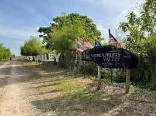

Peranan & Sumbangan
Tugas Harian

Tugas harian beliau termasuk mengurus penternakan udang galah, menjaga tanaman buah-buahan dan sayur-sayuran serta memastikan keadaan ladang sentiasa baik dan terurus.
Kerja ini memerlukan kemahiran berfikir kerana bukan sekadar bercucuk tanam, tetapi juga perlu memahami penjagaan serta habitat setiap jenis tanaman.
Sumbangan
Beliau menyumbang kepada sektor pertanian di Perlis melalui Superfruits Valley dengan menghasilkan pelbagai jenis buah seperti buah tin dan buah gap.
Buah-buahan ini mendapat permintaan tinggi kerana mempunyai manfaat kesihatan, dan ramai pelanggan datang dari luar negeri seperti Kuala Lumpur dan Johor.
Keadaan ini secara tidak langsung membantu meningkatkan ekonomi serta pelancongan di Perlis.
Nasihat
Beliau menasihatkan individu yang berminat dalam bidang ini supaya bersedia dari segi fizikal dan mental kerana kerja ini memerlukan usaha yang tinggi.
Selain itu, mereka juga perlu sentiasa berfikir dan belajar untuk mengembangkan hasil pertanian supaya dapat bersaing dan berjaya.